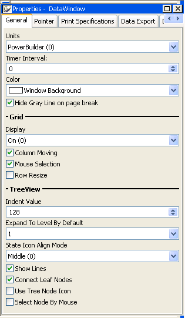
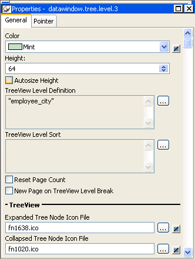
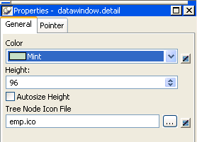

You can set three types of properties for the TreeView DataWindow:
In the sample DataWindow shown in "Creating a new TreeView DataWindow", different tree node icons display for collapsed and expanded levels. The icons are also different for each level. You specify images for these icons as TreeView level band properties.
The sample DataWindow also displays a tree node icon next to every row in the detail band. You specify an image for this icon as a detail band property.
Tree node icons do not display by default. After specifying images for icons, select the Use Tree Node Icon general property.
You set most TreeView DataWindow properties on the General page in the DataWindow Properties view.

The properties that are specific to a TreeView DataWindow are the TreeView properties and the Grid properties in the General page in the Properties view. The Grid properties display in the Properties view only if you select the Grid Style check box when you define the TreeView DataWindow:
| Property | Description |
|---|---|
| Display On (0) | Grid lines always display. |
| Display Off (1) | Grid lines never display, so users cannot resize columns at runtime. |
| Display Only (2) | Grid lines display only when the DataWindow object displays online. |
| Display Print Only (3) | Grid lines display only when the contents of the DataWindow object are printed. |
| Column Moving | Columns can be moved at runtime. |
| Mouse Selection | Data can be selected at runtime and, for example, copied to the clipboard. |
| Row Resize | Rows can be resized at runtime. |
| Indent Value | The indent value of the child node from its parent in the units specified for the DataWindow. The indent value defines the position of the state icon. The X position of the state icon is the X position of its parent plus the indent value. |
| Expand To Level By Default | Expand to TreeView level 1, 2, or 3. |
| State Icon Align Mode | Align the state icon in the middle (0), at the top (1), or at the bottom (2). |
| Show Lines | Whether lines display that connect parent nodes and child nodes. If you want to display lines that connect the rows in the detail band to their parent, select Connect Leaf Nodes. |
| Connect Leaf Nodes | Whether lines display that connect the leaf nodes in the detail band rows. |
| Use Tree Node Icon | Whether an icon for the tree node displays. This applies to icons in the level and detail bands. For how to specify icon images, see "Setting TreeView level properties" and "Setting detail band properties". |
| Select Node By Mouse | Whether a Tree node is selected by clicking the Tree node with the mouse. |
In the Properties view, you can specify expanded and collapsed icons for each TreeView level. You access the Properties view by clicking the bar identifying the band for that level in the Design view in the DataWindow painter. You can also access the Properties view from the Rows menu, or by clicking any of the icons in the Design view that represent the locations of nodes, icons, and connecting lines. (See "Icons in the Design view".)
 To modify properties for a level in a TreeView DataWindow:
To modify properties for a level in a TreeView DataWindow:
Select Rows>Edit TreeView Level from the menu bar and then select the number of the level from the list of levels, or click the bar identifying the band for that level or any of the icons in that band.
Use the DataWindow TreeView Level properties view that displays to edit the properties for the level you selected.

The properties that are specific to a TreeView level band are at the bottom of the Properties view:
You set the tree node icon file name separately for each TreeView level band. You can use a quoted expression for the tree node icon file.
You can specify an icon for the rows in the detail band by clicking the detail band in the DataWindow painter to display the Properties view.

The only property that is specific to the detail band is located at the bottom of the Properties view:
| Property | Description |
|---|---|
| Tree Node Icon File | The file name of the tree node icon in the detail band. You can use a quoted expression. |
For reference information about TreeView DataWindow properties, methods and events, see the DataWindow Reference or the online Help.